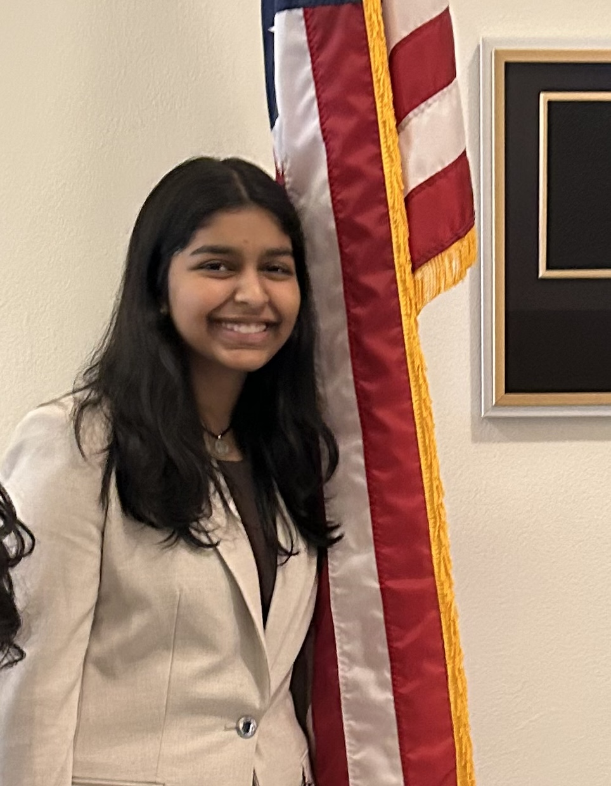

Founder
Titiksha Babu
Titiksha founded The Speranza Cause to turn awareness into something active: campaigns people can join, support people can feel, and a student-led platform that reflects real social contribution, not just good ideas.